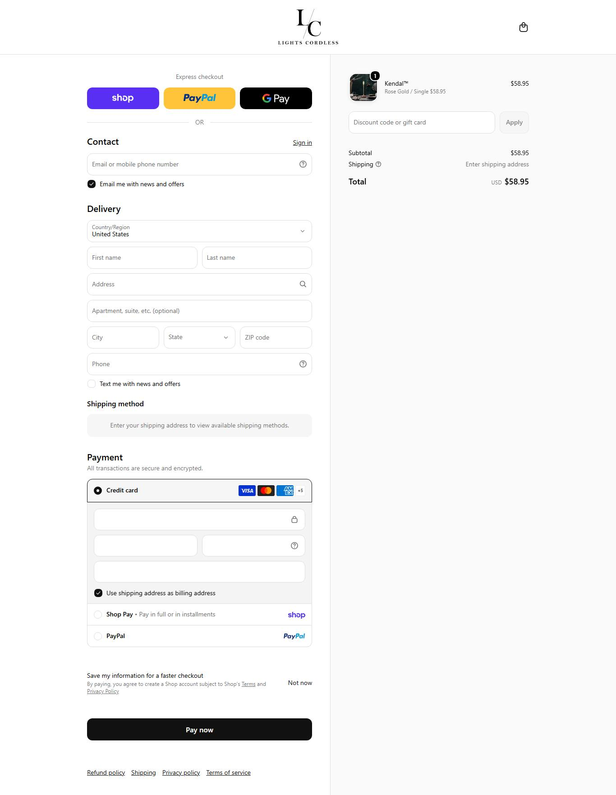

lightscordless.com MODELAR referência para modelar
Copie: Google como canal principal para luminária sem fio de US$ 50 a 60. Não copie: Símbolo ™ em nome de produto sem registro.O que o veredito cobre: Canal Google (Shopping e pesquisa) com luminária sem fio de US$ 50 a 60 e nome próprio por modelo. Não cobre as lanternas solares de jardim, outro nicho.
00Ficha de bolso: catálogo, idade, momento e unidades estimadas
| Item | Leitura |
|---|---|
| Momento | CAINDO visitas: jul/2026 39.628, ago/2026 28.547, set/2026 27.387 |
| 1º produto cadastrado | 06/01/2023: Bedside Touch Table Lamp |
| Produto mais novo | 25/06/2026: 36" Artificial Easter Bunny Topiary (Set of 2) |
| 1º registro no Wayback | 09/03/2023 (43 meses de idade) |
10 mais vendidos com unidades estimadas por mês (Estimativa, conta própria)
| # | Produto | Preço | Unidades baixa | Unidades central | Unidades alta | Faturamento central |
|---|---|---|---|---|---|---|
| 1 | Lightscordless™, Solar-Powered Outdoor Lantern Lights | US$ 58,99 | 56 | 84 | 140 | US$ 4.947 |
| 2 | Luminara™ | US$ 58,95 | 28 | 42 | 70 | US$ 2.472 |
| 3 | Kendal™ | US$ 58,95 | 19 | 28 | 47 | US$ 1.648 |
| 4 | Thinker™ Lamp | US$ 49,95 | 14 | 21 | 35 | US$ 1.047 |
| 5 | Wireless Touch Switch Harmony Lamp | US$ 58,95 | 11 | 17 | 28 | US$ 989 |
| 6 | LED Retro Fabric Cordless Table Lamp | US$ 59,99 | 9 | 14 | 23 | US$ 839 |
| 7 | LumoSense™ LED Motion Sensor Lights | US$ 45,95 | 8 | 12 | 20 | US$ 551 |
| 8 | Mini Luminar | US$ 58,99 | 7 | 10 | 17 | US$ 618 |
00Sinais lidos no site da loja
| Item | O que o site mostra |
|---|---|
| Plataforma | Shopify (catálogo público respondeu) |
| Apps achados no código | klaviyo, loox, Shopify Payments e Shop Pay, gempages, gtag, gtm, recharge, snap, tiktok |
| Pixels e tags | Google Analytics 4 G-MH2DQPZSRS · Google Ads AW-11117361676 |
| Redes sociais no site | facebook.com/people/lightscordless/100089001653657 instagram.com/lightscordless |
| Frete declarado | Processamento em até 2 dias úteis, frete padrão grátis (texto das taxas truncado), prazo de trânsito não lido |
| Devolução e garantia | 30 dias para devolução |
| País provável da operação | Estados Unidos |
| Ranking Tranco | não obtidosem ranking: tráfego abaixo do limiar do Tranco |
| Páginas no mapa do site | 25 endereços; nenhum advertorial achado |
| Avaliações na página de produto | não obtidoo widget de avaliação carrega por script e a leitura pública não trouxe o número |
01Produto campeão
Lightscordless™, Solar-Powered Outdoor Lantern Lights
Primeiro produto da ordem "mais vendido" da própria loja, lida em 06/10/2026 (não traz quantidade vendida). observado
Escada de oferta observada (order bump, upsell e pacotes)
| Degrau | O que é | Preço | Evidência |
|---|
02Mídia paga
| Ritmo de criativo | Valor | Leitura |
|---|---|---|
| criativos únicos observados | sem rolagem não obtidosem leitura de rolagem | amostra, não o total de criativos da loja |
| duplicação (mesmo texto, vários anúncios) | sem leitura de textos repetidos não obtidoesta loja não entrou na leitura de texto da análise de anúncios | quanto o mesmo texto é reaproveitado com mídias diferentes |
| cadência por dia | sem série diária não obtidoa Biblioteca pública não entrega a data de cada anúncio da amostra inteira; a rolagem tem teto de 500 e ordena por recência | não extrapolar uma cadência: seria número inventado |
| longevidade máxima | não obtidonão lido | piso: o anúncio mais antigo pode estar fora da amostra |
| anúncios com 60 dias ou mais | sem leitura não obtidoloja fora da tabela de escala | anúncio que fica mais de 60 dias no ar costuma ser anúncio que se paga; isso não prova lucro |
| mix de formato | sem leitura não obtidosem mix lido |
Criativo campeão desta loja
Nenhum dos 10 criativos mais escalados do mercado é desta loja. A leitura de criativo abaixo vem dos ângulos observados.
03Tráfego real (SimilarWeb · set/2026)
De onde vêm as visitas
| Site | Países de origem (fatia e variação) |
|---|---|
| lightscordless.com | Estados Unidos 89,4% · Canadá 10,6% |
Como essa loja compra busca: lightscordless.com: busca paga 45,6% e orgânica 12,3%. Canal principal: busca paga 45,6%, busca orgânica 12,3%, acesso direto 8,9%, rede social paga 1,8%
Estimativa do SimilarWeb (dado de extensão). Meses anteriores: 39.628 e 28.547. Não é receita.
04Faturamento mensal estimado e investimento em tráfego
Benchmark de custo do setor: CPM (custo por mil impressões), CPC (custo por clique) e CPA (custo por aquisição) por anunciante não existem como dado público. O CPC médio no Reino Unido é £ 0,34 (benchmark de terceiros, não medido nesta pesquisa). O ROAS (retorno sobre o gasto em anúncio) de cada loja só aparece onde há visitas medidas, e é sinal, não dado.
05Páginas capturadas



No celular
06Anatomia do vencedor inferido
Ângulos ativos observados
| # | Ângulo e prova |
|---|---|
| 1 | Anúncios ativos pela URL na Biblioteca da Meta (todos os países, 2026-10-06): 17 ativos e 65 no histórico das páginas da loja. amostra 100% da página Lightscordless, USD; histórico mais antigo visto na amostra (50 de 65): 2026-01-23; criativos recentes: "Museum Look. Renter-Friendly", "48-Hour Battery", picture lights |
07Catálogo, oferta e identificação
- Plataforma
- Shopify (o catálogo público respondeu)
- Apps
- não obtidoapps não lidos
- Pixel Meta
- não obtidonenhuma fonte desta pesquisa traz o pixel da loja
- Catálogo
- 119 produtos lidos; preço mediano do catálogo USD 58,99. Primeiro produto cadastrado em 2023-01-06 (Bedside Touch Table Lamp), o mais novo em 2026-06-25.
- Frete
- Processamento em até 2 dias úteis, frete padrão grátis (texto das taxas truncado), prazo de trânsito não lido
- Garantia
- 30 dias para devolução
- Prazo e BNPL
- Processamento em até 2 dias úteis, frete padrão grátis (texto das taxas truncado), prazo de trânsito não lido · nenhum parcelamento (BNPL) detectado nos meios de pagamento lidos
- Meios de pagamento
- Shopify Payments e Shop Pay (vistos no código)
- Reviews
- não obtidoavaliações não lidas
- Redes
- não obtidorede social não coletada neste levantamento
- Origem provável
- Estados Unidos
- Domínio
- · Tranco: não lido
- Google como canal principal para luminária sem fio de US$ 50 a 60
- Nome curto por modelo (Kendal, Luminara)
- Devolução de 30 dias
- Símbolo ™ em nome de produto sem registro
- Misturar jardim solar no mesmo catálogo
08Dados não obtidos
| Dado | Motivo | Método tentado |
|---|---|---|
| Venda e faturamento | ninguém publica venda de loja privada | visitas por mês do SimilarWeb e preço do catálogo |
| Pixel da Meta | nenhuma fonte desta pesquisa identifica o pixel da loja | leitura pública do HTML e dos apps; sem inspeção de navegador |
| CPM, CPC e CPA desta loja | a Meta não publica custo por anunciante | Biblioteca de Anúncios pública e benchmark de terceiros (só o clique médio no Reino Unido) |
| Valor investido em anúncios e impressões | a Meta só publica gasto de anúncio político; alcance só na União Europeia | API oficial e Biblioteca pública |
09Veredito e classificação
10Os mais vendidos (da própria loja)
| # | Produto | Preço |
|---|---|---|
| 1 | Lightscordless™, Solar-Powered Outdoor Lantern Lights | 58,99 |
| 2 | Luminara™ | 58,95 |
| 3 | Kendal™ | 58,95 |
| 4 | Thinker™ Lamp | 49,95 |
| 5 | Wireless Touch Switch Harmony Lamp | 58,95 |
| 6 | LED Retro Fabric Cordless Table Lamp | 59,99 |
| 7 | LumoSense™ LED Motion Sensor Lights | 45,95 |
| 8 | Mini Luminar | 58,99 |
08Sinal web (SimilarWeb)
Traço de tráfego (3 meses)
Variação mês a mês: ago/2026 ▼ 28% · set/2026 ▼ 4%. O SimilarWeb grátis só dá 3 meses de histórico.
Traço por país
Países de origem
| País | Fatia |
|---|---|
| United States | 89,4% |
| Canada | 10,6% |
Canais de origem
| Canal | Barra | Fatia |
|---|---|---|
| Google pago (busca paga) | 45,6% | |
| Busca orgânica | 12,3% | |
| Acesso direto | 8,9% | |
| Display (anúncios em sites) | 22,0% | |
| Rede social paga | 1,8% | |
| Rede social orgânica | 2,0% | |
| Sites que indicam | 2,6% | |
| 2,0% | ||
| Busca em IA (ChatGPT etc.) | 0,8% |
Engajamento
Palavras-chave que trazem visita
| Palavra | Buscas por mês | Lance (CPC, US$) | Valor estimado |
|---|---|---|---|
| wall sconces battery operated | 470 | 0,98 | 80 |
| art work lights | 20 | não obtidosem lance | 20 |
| zara home | 626.580 | 1,06 | 10 |
| desk lamp | 47.140 | 0,61 | 10 |
| motion sensor light | 8.430 | 0,49 | 10 |
Links para conferir
09Anúncios (Meta e Google)
00Os 10 mais vendidos: volume de busca e Google Trends no Reino Unido
| # | Produto mais vendido | Tipo de produto | Buscas por mês no Reino Unido (todo o tipo) | Google Trends (clique para abrir) |
|---|---|---|---|---|
| 1 | Lightscordless™, Solar-Powered Outdoor Lantern Lights US$ 58,99 | Lanterna decorativa | 1.780 termo: rechargeable lantern | abrir no Trends não obtidosérie do Trends deste tipo não coletada |
| 2 | Luminara™ US$ 58,95 | Outro tipo de produto | não obtidotipo fora do catálogo do nicho | não obtidosem termo |
| 3 | Kendal™ US$ 58,95 | Outro tipo de produto | não obtidotipo fora do catálogo do nicho | não obtidosem termo |
| 4 | Thinker™ Lamp US$ 49,95 | Luminária de mesa recarregável | 33.860 termo: rechargeable table lamp | Reino Unido: rechargeable table lamp 12 meses ▲ 72% · pico em set, nov |
| 5 | Wireless Touch Switch Harmony Lamp US$ 58,95 | Luminária de toque | 880 termo: rechargeable touch lamp | abrir no Trends não obtidosérie do Trends deste tipo não coletada |
| 6 | LED Retro Fabric Cordless Table Lamp US$ 59,99 | Luminária de mesa recarregável | 33.860 termo: rechargeable table lamp | Reino Unido: rechargeable table lamp 12 meses ▲ 72% · pico em set, nov |
| 7 | LumoSense™ LED Motion Sensor Lights US$ 45,95 | Luminária de mesa recarregável | 33.860 termo: rechargeable table lamp | Reino Unido: rechargeable table lamp 12 meses ▲ 72% · pico em set, nov |
| 8 | Mini Luminar US$ 58,99 | Outro tipo de produto | não obtidotipo fora do catálogo do nicho | não obtidosem termo |